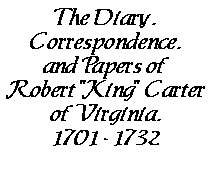

A Collection Transcribed
and Digitized
by Edmund Berkeley, Jr.
List of Letters |
About This Collection
Electronic Text Center, University of Virginia Library
Summary
June 28, 1705
Letter from Robert Carter to William Robertson, June 28, 1705
Robert Carter writes to Council Clerk William Robertson, June 28, 1705, explaining that he was unable to attend the last meeting because of the arrival of goods at his landing, and will not be able to attend the next because he has an appointment with ship masters concerning tobacco he is shipping.
Letter from Robert Carter to William Robertson, June 28, 1705
-1-
Kings Creek [, York County, Virginia]
June 28, 1705
Mr. Wm. Robertson --
I was Setting out for the last Councill on Monday
but some goods just then coming to my Landing stopt
-2-
me till pretty late next day so that I could not recover
Wmburgh till late in the night expecting the Council
would have sett the 2d day -- At Collonel Ludwells last night a little before my taking
horse came yor. Express for this meeting at a Council on
Saturday if I am Sent for pray give His Excellency an
account of my late Journey & that I cannot possibly
be at the next having appointed some masters
to be at my house to give me bills of Lading for
some Tobacco I have on board them and they intend
to leave the river by the last of the week I am
yor. humble serv't
ROBERT CARTER
directed To
Mr Wm. Robertson
Clerk of the Councill
these
Examined per Wm. Robertson
NOTES
Source copy consulted: State Archives, New York State Education Department, Albany. New York (Colony). Council Papers. Vol. 51, p. 41 a-c. This document was copied for Governor Nicholson's private papers, and was carried by him to New York when he later became governor of that colony. The papers remained in New York, passing into the custody of the State Library which burned around the turn of the twentieth century, causing some damage to this series of records which have since been transferred to the state archives. Printed in "Papers Relating to the Administration of Governor Nicholson and the Founding of William and Mary College," Virginia Magazine of History and Biography , 8(Jan. 1901): 268.
"Kings Creek" was the home of Lewis Burwell (d. 1710) in York County. He was a member of Council and the father of Nathaniel (1680-1721) who would marry RC's daughter, Elizabeth, in 1708.
This text revised July 1, 2008.